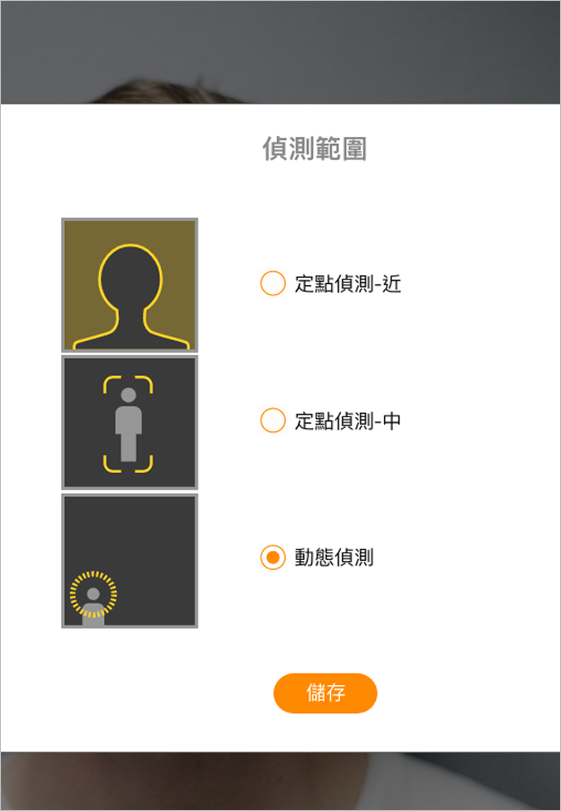
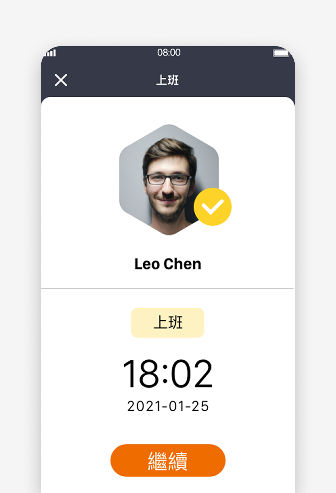
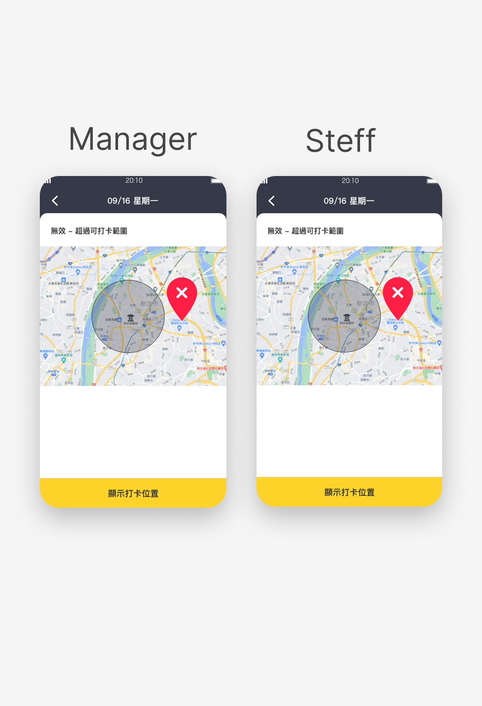

GoFace
GoFace is a new AI facial-recognition attendance system designed for organizations with hybrid working models.
Employees can check in through a wall-mounted Pad, mobile app, or web fallback, while managers access a unified HR console for attendance monitoring.
This project required designing a multi-device, real-world system involving AI latency, hardware constraints, spoof detection, and complex backend logic.
• More than 4 countries: Including Japan, Taiwan, Indonesia, and Thailand.
TIMELINE
- 2020/07 ~ present
- 2.5 years
TEAM
- 2 PM
- 1 PD (I'm here!)
- 1 FE
- 2 BE
- 1 QA
ROLE
- Wireframe
- Mockup
- UI spec
TOOLS
- Figma
- Adobe XD
- Photoshop
- Illustrator
- html+css
About the Project
This was my first experience working at a startup, developing a brand-new product from the ground up. The idea originated from a casual conversation among several RD teammates, and after our manager and CEO recognized its potential, the project officially began.
As a designer, I needed to take on multiple roles and collaborate closely with a team of talented specialists.Throughout the journey, we faced challenges such as redefining direction, exploring customer needs, and testing business viability. After many iterations, we finally arrived at two stable solutions that could be effectively promoted by the sales team.

Research
Problem & Needs
GoFace was free to import and try for one month. During this period, we made adjustments based on user feedback and needs. Four partner stores participated in the pilot program to test and validate new features.
1.Problem
Small stores or companies that still use traditional time clocks face the inconvenience of manually calculating employee salaries at the end of each month.
2. Automation and Cloud Integration
Users can customize policies and scenes to let one device trigger another, while automatically storing data in the cloud.
3. Smart Notifications and History
Receive instant notifications when events occur, and save history and video clips directly in the app.
Define Goals
Replace legacy punch clock with face recognition technology that's accurate and easy to use.
Step by step

User Feedback and Optimization
The employee is just chatting at the door, and the employee's face is detected and the door is opened. I don't want the door to open and close too sensitively.
Optimize user experience
Due to the epidemic, employees are working from home. We need a remote punch-in function, so that employees who work from home or outside can punch in.
Added self-use mobile phone check-in function
Employees who punch in by themselves in our company must limit the punching area and make sure that the employee punches in within the work area.
Added geofencing feature
Design Hand Off
I worked closely with the engineers to validate the design and copy implementation.
App